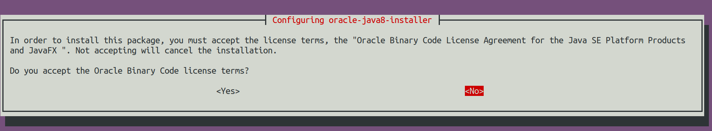
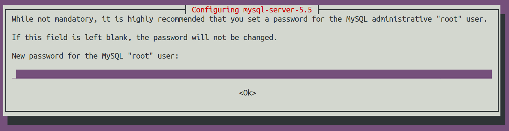

Installation of Business API ecosystem
Application Mashup (WireCloud) course @ http://edu.fiware.org


Presenter Notes
Requirements
As described in the GEri overview, the Business API Ecosystem is not a single software, but a set of projects that work together for proving business capabilities. In this regard, this section contains the basic dependencies of the different components that made up the Business API Ecosystem.
note
These dependencies are not mean to be inatalled manually in this step, as they will be installed throughout the documentation
Presenter Notes
TM Forum APIs and RSS requirements
- Java 8
- Glassfish 4.1+
- MySQL 5.5
Presenter Notes
Charging Backend requirements
- Python 2.7
- MongoDB
- wkhtmltopdf
Presenter Notes
Logic Proxy requirements
- NodeJS 4.5.0 (Including NPM)
Presenter Notes
Installing basic dependencies
Basic dependencies such as Java 8, Glassfish, MySQL, Python, etc. Can be installed using the package management tools provided by your operating system. However, in order to easy the installation process some scripts have been provided.
note
The installation script may override some of the packages already installed in the system. so if you have software with common dependencies you may want to manually resolve them.
Presenter Notes
Installing basic dependencies using the script
In order to automate the installation of the basic dependencies, the script resolve-basic-dep.sh has been provided. This script, located in the directory scripts/, installs all the needed packages for Ubuntu, Debian, and CentOS systems.
Additionally, this script creates a directory /opt/biz-ecosystem where Glassfish 4.1 and Node 4.5.0 are downloaded.
To execute the script, run the following command from the scrips/ directory of the project :
$ sudo ./resolve-basic-dep.sh
During the execution of the script you will be prompted some times in order to accept Oracle Java 8 terms and conditions and to provide MySQL root password.
Presenter Notes
Installing basic dependencies using the script

Presenter Notes
Installing basic dependencies using the script

Presenter Notes
Installing basic dependencies manually
Following, you can find how to install the basic dependencies without using the script. Be aware that some commands require to be executed as root.
Presenter Notes
APIs dependencies
Presenter Notes
APIs dependencies
Java 8 Debian/Ubuntu
To install Java 8 in a Debian or Ubuntu system, it is needed to include the webupd8team repository. In an Ubuntu system this can be done directly with the following command:
$ sudo add-apt-repository ppa:webupd8team/java
In the case of a Debian system the following commands have to be executed:
$ sudo echo "deb http://ppa.launchpad.net/webupd8team/java/ubuntu trusty main" | tee /etc/apt/sources.list.d/webupd8team-java.list
$ sudo echo "deb-src http://ppa.launchpad.net/webupd8team/java/ubuntu trusty main" | tee -a /etc/apt/sources.list.d/webupd8team-java.list
$ sudo apt-key adv --keyserver hkp://keyserver.ubuntu.com:80 --recv-keys EEA14886
Then Java 8 can be installed using the following commands:
$ sudo apt-get update
$ sudo apt-get install -y oracle-java8-installer
$ sudo apt-get install -y oracle-java8-set-default
Presenter Notes
APIs dependencies
Java 8 CentOS 7
For a CentOS 7 system, the installation of Java 8 requires downloading the package from the official site:
$ wget --no-cookies --no-check-certificate --header "Cookie: gpw_e24=http%3A%2F%2Fwww.oracle.com%2F; oraclelicense=accept-securebackup-cookie" "http://download.oracle.com/otn-pub/java/jdk/8u102-b14/jdk-8u102-linux-x64.tar.gz"
$ tar xzf jdk-8u102-linux-x64.tar.gz
Then Java can be installed using alternatives:
$ sudo alternatives --install /usr/bin/java java /opt/biz-ecosystem/jdk1.8.0_102/bin/java 2
$ sudo alternatives --config java
$ sudo alternatives --install /usr/bin/jar jar /opt/biz-ecosystem/jdk1.8.0_102/bin/jar 2
$ sudo alternatives --install /usr/bin/javac javac /opt/biz-ecosystem/jdk1.8.0_102/bin/javac 2
$ sudo alternatives --set jar /opt/biz-ecosystem/jdk1.8.0_102/bin/jar
$ sudo alternatives --set javac /opt/biz-ecosystem/jdk1.8.0_102/bin/javac
Presenter Notes
APIs dependencies
MySQL and Maven Debian/Ubuntu Once Java has been installed, the next step is installing MySQL and Maven :
$ sudo apt-get install -y mysql-server mysql-client
$ sudo apt-get install -y maven
Presenter Notes
APIs dependencies
MySQL and Maven CentOS 7
For installing MySQL in CentOS, it is required to include the related repository before installing it:
$ wget http://repo.mysql.com/mysql-community-release-el7-5.noarch.rpm
$ sudo rpm -ivh mysql-community-release-el7-5.noarch.rpm
$ sudo yum update
$ sudo yum install -y mysql-community-server
Then, for installing Maven:
$ sudo wget http://repos.fedorapeople.org/repos/dchen/apache-maven/epel-apache-maven.repo -O /etc/yum.repos.d/epel-apache-maven.repo
$ sudo sed -i s/\$releasever/6/g /etc/yum.repos.d/epel-apache-maven.repo
$ sudo yum install -y apache-maven
Presenter Notes
APIs dependencies
Glassfish The next step is downloading and extracting Glassfish:
$ wget http://download.java.net/glassfish/4.1.1/release/glassfish-4.1.1.zip
$ unzip glassfish-4.1.1.zip
Finally, it is required to download the MySQL connector for Glassfish and include it within the Glassfish lib directory:
$ wget http://dev.mysql.com/get/Downloads/Connector-J/mysql-connector-java-5.1.39.tar.gz
$ gunzip mysql-connector-java-5.1.39.tar.gz
$ tar -xvf mysql-connector-java-5.1.39.tar
$ cp mysql-connector-java-5.1.39/mysql-connector-java-5.1.39-bin.jar glassfish4/glassfish/lib
Presenter Notes
Charging Backend dependencies
Python 2.7 Debian/Ubuntu
To install Python 2.7 and Pip in a Debian/Ubuntu distribution, execute the following command :
$ sudo apt-get install -y python python-pip
Presenter Notes
Charging Backend dependencies
Python 2.7 CentOS
Python 2.7 is included by default in CentOS 7. To install Pip it is required to include EPEL repository. All this stuff can be done executing the following commands:
$ sudo rpm -iUvh http://dl.fedoraproject.org/pub/epel/7/x86_64/e/epel-release-7-5.noarch.rpm
$ sudo yum -y update
$ sudo yum install -y python-pip
Presenter Notes
Charging Backend dependencies
MongoDB Debian/Ubuntu
To install MongoDB in a Debian/Ubuntu distribution, execute the following command :
$ sudo apt-get install -y mongodb
Presenter Notes
Charging Backend dependencies
MongoDB CentOS 7
To install MongoDB in CentOS it is needed to include its repository first. MongoDB can be installed executing the following commands :
$ sudo echo "[mongodb]
name=MongoDB Repository
baseurl=http://downloads-distro.mongodb.org/repo/redhat/os/x86_64/
gpgcheck=0
enabled=1" > /etc/yum.repos.d/mongodb.repo
$ sudo yum install -y mongodb-org
Presenter Notes
Charging Backend dependencies
Wkhtmltopdf Debian/Ubuntu
In Debian and Ubuntu Wkhtmltopdf is included in a package, so it can be directly installed with the following command :
$ sudo apt-get install -y wkhtmltopdf
Presenter Notes
Charging Backend dependencies
Wkhtmltopdf CentOS 7
In CentOS the Wkhtmltopdf RPM package has to be downloaded for installing it:
$ wget http://download.gna.org/wkhtmltopdf/0.12/0.12.1/wkhtmltox-0.12.1_linux-centos7-amd64.rpm
$ sudo rpm -ivh wkhtmltox-0.12.1_linux-centos7-amd64.rpm
Presenter Notes
Logic Proxy Dependencies
For installing Node and NPM it is needed to download the binaries from the official site and uncompress them :
$ wget https://nodejs.org/dist/v4.5.0/node-v4.5.0-linux-x64.tar.xz
$ tar -xvf node-v4.5.0-linux-x64.tar.xz
Presenter Notes
Installing the Business API Ecosystem
As stated previously, the Business API Ecosystem is composed of different systems that need to be installed separately. In order to easy this process, it has been created an script install.py which can be used to automate the installation.
Presenter Notes
Installing the Business API Ecosystem using the script
The script install.py is located at the root of the Business API Ecosystem project. This script provides functionality to automate the installation of the software. Concretely, it downloads all the APIs and components, compiles and deploys, the APIs, and installs python and node libraries.
This script depends on Python3 to work. If you have used the resolve-basic-dep.sh script, Python 3 is already installed. Otherwise, you can install Python 3 using the following commands:
Presenter Notes
Installing the Business API Ecosystem using the script
Debian/Ubuntu :
$ sudo apt-get install -y python3
$ sudo apt-get install -y python3-pip
Presenter Notes
Installing the Business API Ecosystem using the script
CentOS 7 :
$ sudo yum -y install scl-utils
$ sudo rpm -Uvh https://www.softwarecollections.org/en/scls/rhscl/python33/epel-7-x86_64/download/rhscl-python33-epel-7-x86_64.noarch.rpm
$ sudo yum -y install python33
Presenter Notes
Installing the Business API Ecosystem using the script
Additionally, install.py specs the binaries of Glassfish and Node to be included in the PATH, and need to be accessible by the user using the script. This can be done with the following commands (Note that the commands are supposing both or them are installed at /opt/biz-ecosystem) :
$ export PATH=$PATH:/opt/biz-ecosystem/glassfish4/glassfish/bin
$ export PATH=$PATH:/opt/biz-ecosystem/node-v4.5.0-linux-x64/bin
$ sudo chown -R <your_user>:<your_user> /opt/biz-ecosystem
note
Including the previous command is your .bashrc file, prevents you to have to execute them each time
Moreover, install.py requires Glassfish, MySQL and MongoDB to be up and running.
Presenter Notes
Installing the Business API Ecosystem using the script
Debian/Ubuntu :
$ asadmin start-domain
$ sudo service mysql restart
$ sudo service mongodb restart
Presenter Notes
Installing the Business API Ecosystem using the script
CentOS 7 :
$ asadmin start-domain
$ sudo systemctl start mysqld
$ sudo systemctl start mongod
Finally, during the deployment of the RSS API, the script saves the properties file in the default RSS properties directory. Since this directory is /etc/default/rss, it is required to have root privileges to create it. In this way, this directory must exist and must be accessible by the user executing the script. To do that :
$ sudo mkdir /etc/default/rss
$ sudo chown <your_user>:<your_user> /etc/default/rss
Presenter Notes
Installing the Business API Ecosystem using the script
The script install.py creates the different databases as well as the connection pools and resources. In this regard, after the execution of the script, all the APIs are already configured. You can specify the database settings by modifying the script and updating DBUSER, DBPWD, DBHOST, and DBPORT, which by default contains the following configuration. :
DBUSER = "root"
DBPWD = "toor"
DBHOST = "localhost"
DBPORT = 3306
Presenter Notes
Installing the Business API Ecosystem using the script
To make a complete installation of the Business API Ecosystem, execute the following command :
$ ./install.py all
Presenter Notes
Installing the Business API Ecosystem using the script
In addition to the all option, install.py provides also several options that allows to execute parts of the installation process, so you can have more control over it. Concretely, the script provides the following options:
- clone: Downloads from GitHub the different components of the Business API Ecosystem
- maven: Compiles the downloaded APIs using Maven
- tables: Creates the required databases in MySQL
- persistence: Builds persistence.xml files of the different APIs
- pools: Creates database pools in Glassfish
- resources: Creates database resources in Glassfish
- redeploy: Deploys APIs and RSS war files in Glassfish
- proxy: Installs proxy Node libs
- charging: Installs charging Python libs
Presenter Notes
Installing the Business API Ecosystem Manually
Installing TM Forum APIs
The different reference implementations of the TM Forum APIs used in the Business API Ecosystem are available in GitHub:
Presenter Notes
Installing TM Forum APIs
The installation for all of them is similar. The first step is cloning the repository and moving to the correct release :
$ git clone https://github.com/FIWARE-TMForum/DSPRODUCTCATALOG2.git
$ cd DSPRODUCTCATALOG2
$ git checkout v5.4.0
Once the software has been downloaded, it is needed to create the connection to the database. To do that, the first step is editing the src/main/resources/META-INF/persistence.xml to have something similar to the following:
Presenter Notes
Installing TM Forum APIs
<?xml version="1.0" encoding="UTF-8"?>
<persistence version="2.1" xmlns="http://xmlns.jcp.org/xml/ns/persistence" xmlns:xsi="http://www.w3.org/2001/XMLSchema-instance" xsi:schemaLocation="http://xmlns.jcp.org/xml/ns/persistence http://xmlns.jcp.org/xml/ns/persistence/persistence_2_1.xsd">
<persistence-unit name="DSProductCatalogPU" transaction-type="JTA">
<jta-data-source>jdbc/pcatv2</jta-data-source>
<exclude-unlisted-classes>false</exclude-unlisted-classes>
<properties>
<property name="javax.persistence.schema-generation.database.action" value="drop-and-create"/>
</properties>
</persistence-unit>
</persistence>
Note that you should provide in the tag jta-data-source the name you want for your database connection resource, taking into account that it must be unique for each API.
Presenter Notes
Installing TM Forum APIs
The next step is creating the database for you API.:
$ mysql-u <user> -p<passwd> "CREATE DATABASE IF NOT EXISTS <database>"
note
You have to provide your own credentials and selected database name to the previuos command.
Presenter Notes
Installing TM Forum APIs
Once that that database has been created, the next step is creating the connection pool in Glassfish. To do that, you can use the following command:
$ asadmin create-jdbc-connection-pool --restype java.sql.Driver --driverclassname com.mysql.jdbc.Driver --property user=<user>:password=<passwd>:URL=jdbc:mysql://<host>:<port>/<database> <poolname>
note
You have to provide you own database credentials, database host, database port, the database name of the one created previously, and a name for your pool
Presenter Notes
Installing TM Forum APIs
The last step for creating the database connection is creating the connection resource. To do that, execute the following command:
$ asadmin create-jdbc-resource --connectionpoolid <poolname> <jndiname>
note
You have to provide the name of the pool you have previously created and a name for your resource, which has to be the same as the included in the jta-data-source tag of the persistence.xml file of the API.
Presenter Notes
Installing TM Forum APIs
When the database connection has been created, the next step is compiling the API sources with Maven :
$ mvn install
Presenter Notes
Finally, the last step is deploying the generated war file in Glassfish:
$ asadmin deploy --contextroot <root> --name <root> target/<WAR.war>
note
You have to provide the wanted context root for the API, a name for it, and the path to the war file
Presenter Notes
Installing the RSS
The RSS sources can be found in GitHub
The first step for installing the RSS component is downloading it and moving to the correct release:
$ git clone https://github.com/FIWARE-TMForum/business-ecosystem-rss.git
$ cd business-ecosystem-rss
$ git checkout v5.4.0
Presenter Notes
Installing the RSS
Then, the next step is coping, database.properties and oauth.properties files to its default location at /etc/default/rss :
$ sudo mkdir /etc/default/rss
$ sudo chown <your_user>:<your_user> /etc/default/rss
$ cp properties/database.properties /etc/default/rss/database.properties
$ cp properties/oauth.properties /etc/default/rss/ouath.properties
note
You have to include your user when changing rss directory owner
Presenter Notes
Installing the RSS
Once the properties files have been copied, they should be edited in order to provide the correct configuration params:
database.properties:
database.url=jdbc:mysql://localhost:3306/RSS
database.username=root
database.password=root
database.driverClassName=com.mysql.jdbc.Driver
oauth.properties:
config.grantedRole=Provider
config.sellerRole=Seller
config.aggregatorRole=aggregator
note
The different params included in the configuration file are explained in detail in the Configuration section
Presenter Notes
Installing the RSS
Once the properties files have been edited, the next step is compiling the sources with Maven :
$ mvn install
Presenter Notes
Installing the RSS
Finally, the last step is deploying the generated war file in Glassfish:
$ asadmin deploy --contextroot DSRevenueSharing --name DSRevenueSharing fiware-rss/target/DSRevenueSharing.war
Presenter Notes
Installing the Charging Backend
The Charging Backend sources can be found in in GitHub
The first step for installing the charging backend component is downloading it and moving to the correct release:
$ git clone https://github.com/FIWARE-TMForum/business-ecosystem-charging-backend.git
$ cd business-ecosystem-charging-backend
$ git checkout v5.4.0
Presenter Notes
Installing the Charging Backend
Once the code has been downloaded, it is recommended to create a virtualenv for installing python dependencies (This is not mandatory). :
$ virtualenv virtenv
$ source virtenv/bin/activate
Presenter Notes
Installing the Charging Backend
To install python libs, execute the python-dep-install.sh script :
$ ./python-dep-install.sh
note
If you have not created and activated a virtualenv you will need to execute the script using sudo
Presenter Notes
Installing the Logic Proxy
The Charging Backend sources can be found in in GitHub
The first step for installing the logic proxy component is downloading it and moving to the correct release:
$ git clone https://github.com/FIWARE-TMForum/business-ecosystem-logic-proxy.git
$ cd business-ecosystem-logic-proxy
$ git checkout v5.4.0
Presenter Notes
Installing the Logic Proxy
Once the code has been downloaded, Node dependencies can be installed with npm asd follows :
$ npm install
Presenter Notes